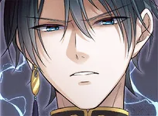

10月
(1,200円)
11月
(2,800円)
12月
(800円)
1月
(2,600円)
2月
(2,100円)
3月
(3,500円)

第3話の構図、すごく好きです。特に見開きのシーンは息をのみました！
キャラクターの表情がとても豊かで、読んでいて感情移入できました。続きが気になる！
背景の描き込みが細かくて世界観に引き込まれます。毎話楽しみにしています。
ストーリーの展開が予想外で面白い。主人公の成長が伝わってきてすごく良かったです。
セリフのテンポが心地よくて読みやすい。友達にもおすすめしました！
主人公の葛藤がリアルに伝わってきて、思わず読み込んでしまいました。
color palette がとってもおしゃれ。目が幸せになる作品です。
第5話のラストで鳥肌が立ちました。次回が待ちきれません！
ギャグとシリアスのバランスが絶妙で、飽きずに最後まで読めました。
サブキャラクターも個性があって、誰ひとり無駄がない。脚本がすごいです。
線の強弱がとても丁寧で、動きが伝わってくる。アクションシーンが特に好き！
世界観の作り込みが素晴らしい。読むたびに新しい発見があります。
毎話ちゃんと読者を引きつけるフックがある。構成力が高い作品です。
ヒロインの成長が丁寧に描かれていて、感情移入しやすかったです。
こんにちは！漫画についてなんでも聞いてください。
最近キャラクターの顔がうまく描けなくて悩んでいます
キャラクターで大事なのは「シルエットで誰かわかること」です。 まず全身を描く前に、シルエットだけで個性が出るか確認してみて。髪型・体型・服装の組み合わせでキャラが立ちます。表情は目の形と眉の角度の2点で印象が大きく変わりますよ。
シルエットから考えるのは試したことがなかったです。やってみます！
ぜひ！まずはお気に入りのキャラのシルエットをトレースするところから始めると感覚がつかみやすいですよ。また何かあれば聞いてくださいね。